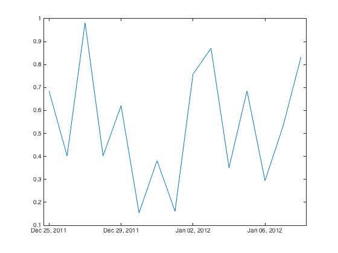

DateTime Object Tutorial
DateTime objects provide a transparent way to handle different representations of date/time information and facilitate transfer between time standards such as UTC and TAI.
Contents
Initializing DateTime Objects
There are various ways to initialize a date time objects such as using the YEAR, DOY, and SOD constructor where "DOY" stands for day of year, and "SOD" stands for seconds of day
DateTime(1980,7,43200)
ans =
DateTime with properties:
PRECISION: 3
year: 1980
doy: 7
month: 1
day: 7
gpsWeek: 0
gpsWeekDay: 1
mjd: 44245
serialDate: 723187.5
hour: 12
minute: 0
soh: 0
sod: 43200
sow: 129600
Notice that the DateTime object has precomputed many different time representations. The table below gives a description for each DateTime property:
| Property | Description |
| PRECISION | This value indicates millisecond precision |
| year | Calendar year |
| month | Calendar month of year (range: 1 - 12) |
| day | Calendar day of month (range: 1 - 31) |
| gpsWeek | Number of weeks since Jan 6, 1980 |
| gpsWeekDay | The day of gpsWeek (range: 0 - 6) |
| mjd | Modified Julian date (MJD) |
| serialDate | Matlab linear datenum referenced to Jan 1, 0000 |
| hour | Hour of Day (range: 0 - 23) |
| minute | Minute of hour (range: 0 - 59) |
| soh | Second of hour (range: 0 - 59) |
| sod | Second of day (range: 0 - 86399) |
| sow | Second of gpsWeek (range: 0 - 604799) |
There are a few helper functions which act like properties
| Meta-Property | Description | Example |
| fyear | Fraction of year where one day is 1/366 for leap years and 1/365 otherwise | 2015.283483 |
| fmjd | Fraction of modified julian day | 57694.7584309 |
| fjd | Fraction of julian day | 2455920.5489322 |
Likewise the table below outlines the various DateTime constructors:
| Constructor | Description |
| DateTime(YYYY,DOY,SOD) | Useful in many operational settings since DOY is linear for the year and SOD is linear for the day |
| DateTime(GPSWeek,SOW) | Used to initialize date time objects associated with GPS/IGS related information |
| DateTime(datenum) | Used to create DateTime objects from Matlab serial date numbers (e.g. datenum, datevec, datestr) |
| DateTime() | Empty constructor initializes all properties to NaN for use with second stage constructor (see below) |
Note that these constructors initialize only a single DateTime object at once. Use two-stage constructors to initialize vectors of DateTime objects.
Since overloading the constructor can get sloppy, two-stage constructors are used to make object initialization more transparent:
| Second Stage Constructor | Description |
| DateTime.initWithMJD(mjd) | Many occasions data files use fMJD to specify observation epochs. Note, if input MJD arg is 1xN then output is 1xN array of DateTime objects |
| DateTime.initWithSerialDate(dn) | Use datestr to convert date strings to serial date numbers and then use this constructor to convert to array of DateTime objects |
| DateTime.initWithFyear(fy) | Use fractional year to initialize DateTime object. Note that one day is 1/366 for leap years and 1/365 otherwise. |
Example 1: initialize DateTime for current time
dt = DateTime(now)
dt =
DateTime with properties:
PRECISION: 3
year: 2015
doy: 195
month: 7
day: 14
gpsWeek: 1853
gpsWeekDay: 2
mjd: 57217
serialDate: 736159.948896852
hour: 22
minute: 46
soh: 24.688
sod: 81984.688
sow: 254784.688
Example 2: initialize DateTime objects for array of modified julian dates and extract the day of year and second of day
mjd = [56215.5, 56216.6, 56217.7]; dt = DateTime.initWithMJD(mjd); sod = [dt.sod]
sod =
43200 51840 60480
Example 3: initialize DateTime objects from timestamps and extract GPS date and time. Notice here that DateTime() objects interoperate with existing MATLAB datenum. Here time stamps are in a common calendar format and can be easily converted to serial date number
timestamps = {'2012/05/23 15:56:30', '2012/05/23 15:57:00', '2012/05/23 15:57:30'}
dn = datenum(timestamps,'YYYY/mm/dd HH:MM:SS')
dt = DateTime.initWithSerialDate(dn)
gpsWeek = [dt.gpsWeek]
gpsSOW = [dt.sow]
timestamps =
'2012/05/23 15:56:30' '2012/05/23 15:57:00' '2012/05/23 15:57:30'
dn =
735012.664236111
735012.664583333
735012.664930556
dt =
1x3 DateTime array with properties:
PRECISION
year
doy
month
day
gpsWeek
gpsWeekDay
mjd
serialDate
hour
minute
soh
sod
sow
gpsWeek =
1689 1689 1689
gpsSOW =
316590 316620 316650
DateTime Arithmetic and Comparisons
All of the usual operators such as +,-, <, >= etc have been overloaded for DateTime objects. Since DateTime objects keep an internally normalized version of the epoch, comparison operators are particularly useful for comparing date and time information with differing representations. For example comparing GPS date information with MJD. Similarly, arithmetic operators make it easy to work in seconds of week and then convert to seconds of day or seconds of hour.
To facilitate a variety of use cases there are predefined lengths of time (time delta) summarized below
| Time Delta | Description |
| DateTime.ONE_SEC | All DateTime arithmetic is computed with time deltas in units of one second |
| DateTime.ONE_MIN | 60 seconds = 60 * DateTime.ONE_SEC |
| DateTime.ONE_HOUR | 3600 seconds = 60 minutes |
| DateTime.ONE_DAY | 86400 seconds = 24 hours |
| DateTime.ONE_WEEK | 604800 = 7 days |
| DateTime.ONE_MONTH | 2592000 seconds = 30 days |
| DateTime.ONE_YEAR | 31536000 seconds = 365 days |
Note that the + operator is only defined for double and returns a new date time incremented rhs many seconds (dt + rhs). However, the minus operator, -, is defined for both double and DateTime such that the subtraction of two DateTime objects returns a time delta (in seconds) while subtraction of a double returns a new DateTime object decremented by rhs many seconds (dt - rhs).
Example 0: Basic arithmetic and comparisons
dt = DateTime(2014,278,67467); % compare equals dt == dt % less than dt < dt + 1 % greater than dt > dt - DateTime.ONE_HOUR
ans =
1
ans =
1
ans =
1
DateTime comparisons operators (<, >, ==, <=, >=) only consider time deltas larger than 1 millisecond.
dt == dt + 0.000001
ans =
1
Example 1: Equality comparison of two dates with different representations
% init obj with modified julian date dt1 = DateTime.initWithMJD(56785.8349); % init with GPS week and second of week dt2 = DateTime(1791,417735.36); % equivalence regardless of representation ... dt1 == dt2
ans =
1
Example 2: DateTime object can also be used in a a control flow loop accumulating a time delta.
% init with year, day of year, and second of day dt = DateTime(2012,144,57390); % init stop dt_stop = dt + DateTime.ONE_DAY; % loop until dt_stop while dt <= dt_stop % do stuff ... % update date time by 30 seconds dt = dt + 30 * DateTime.ONE_SEC; end
Example 3: Loop until some time delta is acheived. Note that the subtraction of two DateTime objects returns a time delta (in seconds).
% init with fraction of year dt_start = DateTime.initWithFyear(2013.47839890); % init loop var at start time dt = dt_start; while dt - dt_start <= DateTime.ONE_HOUR % do stuff ... % increment dt by 30 seconds dt = dt + 30 * DateTime.ONE_SEC; end
The Colon Operator
Using DateTime arithmetic and time deltas, arrays of DateTime objects with uniform time step can be initialized using the : operator.
Example 0: initialize array of DateTime objects with 30 second time step
% init with year, doy, and second of day a = DateTime(2014,293,43200); b = a + DateTime.ONE_DAY; % create DateTime objects with a 30 second interval a : 30 * DateTime.ONE_SEC : b
ans =
1x2881 DateTime array with properties:
PRECISION
year
doy
month
day
gpsWeek
gpsWeekDay
mjd
serialDate
hour
minute
soh
sod
sow
Or, create date time objects for each hour of a day
% init with gps week and gps second of week dt = DateTime(1678,487377); % create array of DateTime objects with time step of one hour dt : DateTime.ONE_HOUR : dt + DateTime.ONE_DAY
ans =
1x25 DateTime array with properties:
PRECISION
year
doy
month
day
gpsWeek
gpsWeekDay
mjd
serialDate
hour
minute
soh
sod
sow
Finally, create DateTime objects for each day of a year
% init with GPS week and GPS second of week dt = DateTime(1778,43200); % create DateTime object array with time delta of 3.5 days dt : 3.5 * DateTime.ONE_DAY : dt + DateTime.ONE_YEAR
ans =
1x105 DateTime array with properties:
PRECISION
year
doy
month
day
gpsWeek
gpsWeekDay
mjd
serialDate
hour
minute
soh
sod
sow
Note that if no time step is defined, a default time delta of one second is used
a:a+10
ans =
1x11 DateTime array with properties:
PRECISION
year
doy
month
day
gpsWeek
gpsWeekDay
mjd
serialDate
hour
minute
soh
sod
sow
String Functions
There are various string functions to facilitate date and time formatting similar to MATLAB built-in function datestr.
String Function | Description | Example |
|---|---|---|
| str | Default string representation with format dd/mm/yyyy HH:MM:SS.FFF | 02/02/2014 12:00:00.000 |
| timestr | Default time (only) string with format HH:MM:SS.FFF | 20:02:15.360 |
| datestr(format) | Shortcut for generating custom format string | dt.datestr('yyyy-QQ') |
| doystr | Day of year in three digits | 005, 067, 295 |
| sodstr | Second of day in five digits | 00049, 07783, 72189 |
| yyyy | Year in four digits | 1990, 2002 |
| yy | Year in two digits | 90, 02 |
| Quarter year using letter Q and onedigit | Q1 | |
| mmmm | Month using full name | March, December |
| mmm | Month using first three letters | Mar, Dec |
| mm | Month in two digits | 03, 12 |
| m | Month using capitalized first letter | M, D |
| dddd | Day using full name | Monday, Tuesday |
| ddd | Day using first three letters | Mon, Tue |
| dd | Day in two digits | 05, 20 |
| d | Day using capitalized first letter | M, T |
| HH | Hour in two digits | 05, 12 |
| MM | Minute in two digits | 12, 02 |
| SS | Second in two digits | 07, 59 |
| FFF | Millisecond in three digits | 057 |
Example 0: Simple usage of string format functions
fprintf('%s %s %s\n', dt.yyyy, dt.doystr, dt.sodstr)
2014 033 43200
Example 1: Noisy time tag
[dt.dddd,'_',dt.mmmm,'_',dt.dd,'_',dt.yyyy]
ans = Sunday_February_02_2014
Example 2: Noisy time tag using shortcut to Matlab built-in datestr function
dt.datestr('dddd_mmmm_dd_yyyy')
ans = Sunday_February_02_2014
Example 3: Noisy time tag using Matlab built-in datestr directly
datestr(dt.serialDate,'dddd_mmmm_dd_yyyy')
ans = Sunday_February_02_2014
Working with Arrays of DateTime Objects
When working with a data set it is not unusual to have an array of DateTime objects. These arrays of DateTime objects work just like normal vectors in MATLAB.
For example, suppose x = [1 2 3 4]; then x + 1 = [2 3 4 5] where each element of the vector has been incremented by 1. Vectors of DateTime objects work in a similar fashion. Such operations are typical of transforming an array of DateTime objects from one time reference system to another, say GPS to TAI.
Example 0: Convert array of DateTime objects from GPS to UTC to TAI time.
% define number of seconds between UTC and GPS time reference systems leapsecs = 36; % define an array of DateTime objects using reference information in GPS time dtGPS = DateTime(1668,0):DateTime.ONE_DAY:DateTime(1669,0); % view the year, day of year, and second of day GPS = dtGPS.str % convert from GPS time reference system to UTC dtUTC = dtGPS - leapsecs + 19; % notice how DateTime objects semelessly handle year and day boundaries UTC = dtUTC.str % finally, convert UTC to TAI dtTAI = dtUTC + leapsecs; % have a look TAI = dtTAI.str
GPS =
'25/12/2011 00:00:00.000'
'26/12/2011 00:00:00.000'
'27/12/2011 00:00:00.000'
'28/12/2011 00:00:00.000'
'29/12/2011 00:00:00.000'
'30/12/2011 00:00:00.000'
'31/12/2011 00:00:00.000'
'01/01/2012 00:00:00.000'
UTC =
'24/12/2011 23:59:43.000'
'25/12/2011 23:59:43.000'
'26/12/2011 23:59:43.000'
'27/12/2011 23:59:43.000'
'28/12/2011 23:59:43.000'
'29/12/2011 23:59:43.000'
'30/12/2011 23:59:43.000'
'31/12/2011 23:59:43.000'
TAI =
'25/12/2011 00:00:19.000'
'26/12/2011 00:00:19.000'
'27/12/2011 00:00:19.000'
'28/12/2011 00:00:19.000'
'29/12/2011 00:00:19.000'
'30/12/2011 00:00:19.000'
'31/12/2011 00:00:19.000'
'01/01/2012 00:00:19.000'
In the last example a string function was called for an array of DateTime objects which return a cell array, one result for each DateTime object.
class(TAI)
ans = cell
But on the other hand, if working with a 1x1 "scalar" DateTime object string functions return type char.
class(dtGPS(1).str)
ans = char
Finally, when working with arrays of DateTime objects, need to use square brackets when accessing object properties
doyArray = [dtGPS.doy] size(doyArray)
doyArray =
359 360 361 362 363 364 365 1
ans =
1 8
If the square brackets are not used, Matlab will return a single ans, one for each object. Matlab calls this behavior "comma seperated lists".
% dont forget square brackets!! doyArray = dtGPS.doy; % oi vey ... only got a single result doyArray
doyArray = 359
Example 1: Another common operation to to compute elapsed seconds from a particular reference epoch.
% define a reference epoch refEpoch = DateTime(1980,1,0); % compute elapsed seconds from reference epoch elapsedSeconds = dtGPS - refEpoch
elapsedSeconds =
Columns 1 through 3
1009238400 1009324800 1009411200
Columns 4 through 6
1009497600 1009584000 1009670400
Columns 7 through 8
1009756800 1009843200
Helper Functions
There are a few helper functions worth mentioning here. Often with working with a data set we need to get the time span of the data. This can be accomplished with the min and max functions
Example 0: Compute the timespan of an array of DateTime objects in days using DateTime min and max functions
timespan = (dtGPS.max - dtGPS.min) / DateTime.ONE_DAY
timespan =
7
In a perhaps more idiomatic fashion
timespan = (max(dtGPS) - min(dtGPS)) / DateTime.ONE_DAY
timespan =
7
Example 1: Likewise, arrays of DateTime objects can be sorted using the sort function
% create random permutation index ix = randperm(numel(dtGPS)); % shuffle the array dtShuffle = dtGPS(ix); % have a look doyShuffled = [dtShuffle.doy] % sort the array dtSorted = dtGPS.sort; % have another look at sorted result doySorted = [dtSorted.doy]
doyShuffled =
1 360 363 364 359 365 361 362
doySorted =
359 360 361 362 363 364 365 1
Both datetime and datevec have been added to facilitate iteroperability with other Matlab functionality Example 2: plot data with datetime axis
% define an array of DateTime objects using GPS time representation dt = DateTime(1668,0):DateTime.ONE_DAY:DateTime(1670,0); % define some y data ydat = rand(size(dt)); % plot data with datetime axis lables using Matlab's built-in datetime objects plot(dt.datetime, ydat);
Example 3: Get date vectors for each DateTime object
dv = dtUTC.datevec
% check the size
size(dv)
dv =
2011 12 24 23 59 43
2011 12 25 23 59 43
2011 12 26 23 59 43
2011 12 27 23 59 43
2011 12 28 23 59 43
2011 12 29 23 59 43
2011 12 30 23 59 43
2011 12 31 23 59 43
ans =
8 6
Example 4: Getting index of unique DateTime objects in an array
% create vector with duplicate DateTime objects dt = [dtGPS, dtGPS]; % extract unique DateTime dtu = dt.unique; % locate first unique DateTime indx = dt == dtu(2)
indx =
Columns 1 through 13
0 1 0 0 0 0 0 0 0 1 0 0 0
Columns 14 through 16
0 0 0
Possible Issues
Example 0: It is important to keep in mind 3 digits of percision when comparing DateTime objects "small" differences
% create two DateTime objects with sub-millisecond difference dt1 = DateTime(2015,13,43200.111111); dt2 = DateTime(2015,13,43200.111555); % comparison of these DateTime objects will only consider down to millisecond when evaluating equality of DateTime objects. dt1 == dt2 % but notice explicit comparison of dt1 and dt2 properties will return false since using equal for two doubles. dt1.sod == dt2.sod
ans =
1
ans =
0
Advanced Examples
DateTime objects can out of range values during initialization
Example 0a: negative day of year, and day of year zero simply roll over to previous year
dt = [ DateTime(2015,-1,0), DateTime(2015,0,0), DateTime(2015,1,0)]; dt.str
ans =
'30/12/2014 00:00:00.000'
'31/12/2014 00:00:00.000'
'01/01/2015 00:00:00.000'
Example 0b: day of year overflow is properly accumulated in years. This is day 101 of 2015
dt = DateTime(2013,830,0) + DateTime.ONE_DAY;
wala = [dt.yyyy,' ',dt.doystr]
wala = 2015 101
Example 0c: This is first second of GPS week 1678
dt = DateTime(1678,0); dt.str
ans = 04/03/2012 00:00:00.000
While this is the last second of GPS week 1677
dt = DateTime(1678,-1); dt.str
ans = 03/03/2012 23:59:59.000
Example 1: Find the day of year of the 31st of every month
dt = DateTime(2014,1,0):DateTime.ONE_DAY:DateTime(2015,0,0); [dt([dt.day]==31).doy]
ans =
31 90 151 212 243 304 365
Example 2: Compute the date of every Monday in 2008
dt = DateTime(2008,1,0):DateTime.ONE_DAY:DateTime(2009,0,0);
dt_mon = dt(strcmp(dt.dddd,'Monday'));
dt_mon(1:3).str
size(dt_mon)
ans =
'07/01/2008 00:00:00.000'
'14/01/2008 00:00:00.000'
'21/01/2008 00:00:00.000'
ans =
1 52
Notice here that the specification of the last day of 2008 as DateTime(2009,0,0) circumvents needing to know that 2008 isa leap year